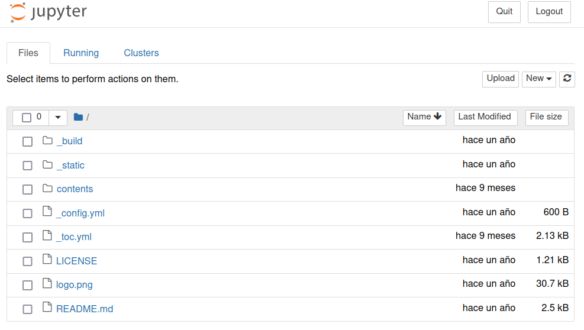
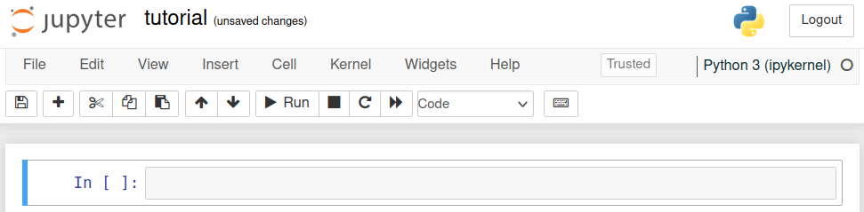

6. Breve tutorial de Jupyter y IPython#
6.1. Uso básico#
Al abrir el frontend web de jupyter veremos tres pestañas: Files, Running y Clusters.
Files: Permite navegar por nuestro sistema, manipular archivos/carpetas y abrir cuadernillos/scripts
Running: Muestra y permite terminar los cuadernillos en ejecución.
Clusters: Para controlar conjuntos de ejecutores o kernels de IPython para hacer cómputo multiproceso.
Si creamos o seleccionamos un cuadernillo veremos la siguiente interfaz:
Que tiene dos secciones principales
Encabezado: Muestra el título y barras de herramientas y comandos.
Cuerpo: Colección de celdas para código y texto enriquecido.
El código o lenguaje de programación depende del kernel que se esté utilizando. En cambio el texto enriquecido siempre se escribe en lenguaje markdown.
Las celdas de código o texto tienen dos modos:
Modo edición indicado por un borde verde: Permite editar el contenido de la celda.
modo comando indicado por un borde azul: Permite mover, cortar, copiar la celda.
En lo que sigue veremos algunos aspectos características de las celdas de código enfocándonos en sus diferencias con scripts regulares de Python.
Consejo
Se recomienda aprender los siguientes atajos de teclado (keyboard shortcuts):
Ejecución: Shift+Enter y Ctrl+Enter
Creación: a y b
Copiar y pegar celdas: c y v
Cambio de tipo: m y y
Salvar: Ctrl+s
Puede consultar la lista completa de atajos con h o bajo el menú Help.
6.2. Editando y ejecutando un bloque de código#
La última línea de ejecución de un bloque se imprime como salida
x = 1412043130
x
1412043130
Las variables y módulos que se crean/importan en un bloque puede ser llamados desde otro bloque
x
1412043130
Para imprimir otras lineas usamos print o display
print(2*x)
3*x
2824086260
4236129390
Se puede suprimir la salida terminando la expresión con ;
x;
6.3. Ayuda y autocompletación en Jupyter#
Si escribes
?después de un módulo se levantará el docstring de ese móduloSi escribes
??después de un módulo se levantará el código fuente de ese código
Por ejemplo
def funcion_interesante(x, y):
"""
Esta es una función interesante que suma sus argumentos
Argumentos: x, y
"""
return x + y
Si escribes funcion_interesante?? deberías ver una pestaña como la siguiente

En un bloque de código puedes usar TAB para autocompletar nombres de variables, módulos o rutas
También puedes usar Shift+TAB para levantar el docstring de una función
Si usas esto con funcion_interesante deberías ver algo como

6.4. “Magias” de IPython#
Las magias son comandos especiales de IPython que se llama con el operador %
Las “magias” disponibles son
%lsmagic
Available line magics:
%alias %alias_magic %autoawait %autocall %automagic %autosave %bookmark %cat %cd %clear %colors %conda %config %connect_info %cp %debug %dhist %dirs %doctest_mode %ed %edit %env %gui %hist %history %killbgscripts %ldir %less %lf %lk %ll %load %load_ext %loadpy %logoff %logon %logstart %logstate %logstop %ls %lsmagic %lx %macro %magic %man %matplotlib %mkdir %more %mv %notebook %page %pastebin %pdb %pdef %pdoc %pfile %pinfo %pinfo2 %pip %popd %pprint %precision %prun %psearch %psource %pushd %pwd %pycat %pylab %qtconsole %quickref %recall %rehashx %reload_ext %rep %rerun %reset %reset_selective %rm %rmdir %run %save %sc %set_env %store %sx %system %tb %time %timeit %unalias %unload_ext %who %who_ls %whos %xdel %xmode
Available cell magics:
%%! %%HTML %%SVG %%bash %%capture %%debug %%file %%html %%javascript %%js %%latex %%markdown %%perl %%prun %%pypy %%python %%python2 %%python3 %%ruby %%script %%sh %%svg %%sx %%system %%time %%timeit %%writefile
Automagic is ON, % prefix IS NOT needed for line magics.
Por ejemplo podemos medir el tiempo de ejecución de un bloque usando
%%time
a = ''
for i in range(10):
a += str(i)
print(a)
0123456789
CPU times: user 88 µs, sys: 8 µs, total: 96 µs
Wall time: 89.9 µs
O mostrar las variables y librerías que hemos importado a nuestro entorno
%who
a funcion_interesante i x
O los comandos que hemos escrito
%history
x = 1412043130
x
x
print(2*x)
3*x
x;
def funcion_interesante(x, y):
"""
Esta es una función interesante que suma sus argumentos
Argumentos: x, y
"""
return x + y
%lsmagic
%%time
a = ''
for i in range(10):
a += str(i)
print(a)
%who
%history
También podemos borrar las variables creadas y módulos importados con
%reset
Once deleted, variables cannot be recovered. Proceed (y/[n])? y
Y setear variables de entorno
%env OMP_NUM_THREADS=4
env: OMP_NUM_THREADS=4
entre mutras otras opciones útiles que iremos viendo a lo largo del curso
Corriendo un script Python externo
Podemos usar la magia %run para ejecutar un script externo
%run script_interesante.py
3628800
1*2*3*4*5*6*7*8*9*10
3628800
También podemos importar una función dentro de un módulo con
from script_interesante import funcion_interesante
funcion_interesante(10)
3628800
Si estamos trabajando en el módulo script_interesante es conveniente importarlo dinamicamente
De esta forma cualquier cambio que hagamos en el script se vera reflejado inmediatamente en el cuadernillo
Para uso debemos usar la magia %autoreload
Puedes consultar la ayuda de esta magia con %autoreload?
%load_ext autoreload
%autoreload 2
# Todo lo que importe a continuación podrá ser modificado dinamicamente
from script_interesante import funcion_interesante
funcion_interesante(10)
3628800
Errores y debugging
La magia %debug nos permite hacer debugging a nivel de bloque
Si se detecta un error se levanta automáticamente una interfaz de ipdb
%debug
a = [1, 2, 3, 4]
a[10] # Esto lanzará ipdb
En Repaso de Python 3 encontrarás instrucciones para usar pdb/ipdb
6.5. Accediendo al sistema operativo#
Usando el operador ! podemos hacer llamados al sistema operativo dentro de nuestros bloques de código.
Además podemos usar $ dentro de un comando para entregar variables de nuestro cuadernillo.
Nota
Los ejemplos que se muestran a continuación asumen un sistema UNIX. En MS Windows estos comandos podrían no existir.
mi_variable_interesante = '/home/phuijse'
Puedo utilizar una variable de Python como entrada para un comando de terminal:
!echo $mi_variable_interesante
/home/phuijse
También es posible capturar el retorno de las funciónes llamadas con !
!ls /home/phuijse/Work/Cursos/PythonBook/contents/
lsd: /home/phuijse/Work/Cursos/PythonBook/contents/: No such file or directory (os error 2).
lista_archivos = !ls
print(lista_archivos)
['__pycache__', 'beyond_python.ipynb', 'img', 'intro.md', 'ipython_display.ipynb', 'script_interesante.py', 'tutorial.ipynb']
Algunas funciones básicas de UNIX a tener con consideración:
pwd: Retorna la ruta del directorio actualls foo: Lista de los archivos y directorios enfoorm foo: Borrar el archivofoocd foo: Moverse al directoriofoocp foo bar: Copiar el archivofoocomobarmkdir/rmdir fooCrear/Borrar directoriofoocat foo: Imprimir el contenido del archivofoohead/tail -n10 foo: Imprimir las primeras/últimas 10 lineas defoomore foo: Imprimirfoopor partes
Nota
También podemos usar la magía %%bash para acceder al terminal.
%%bash
echo "Estoy usando:" $SHELL
echo "Mi path es:" $PATH
free -m
df -h
Estoy usando: /usr/bin/fish
Mi path es: /home/phuijse/.conda/envs/ds/bin:/home/phuijse/.local/bin:/opt/miniconda3/condabin:/usr/local/sbin:/usr/local/bin:/usr/bin:/usr/bin/site_perl:/usr/bin/vendor_perl:/usr/bin/core_perl
total used free shared buff/cache available
Mem: 15695 3769 9667 448 2258 11160
Swap: 0 0 0
Filesystem Size Used Avail Use% Mounted on
dev 7.7G 0 7.7G 0% /dev
run 7.7G 1.3M 7.7G 1% /run
/dev/nvme0n1p2 98G 37G 57G 40% /
tmpfs 7.7G 1.8M 7.7G 1% /dev/shm
tmpfs 7.7G 4.0K 7.7G 1% /tmp
/dev/nvme0n1p3 370G 154G 198G 44% /home
/dev/nvme0n1p1 350M 109M 242M 31% /boot
tmpfs 1.6G 24K 1.6G 1% /run/user/1000